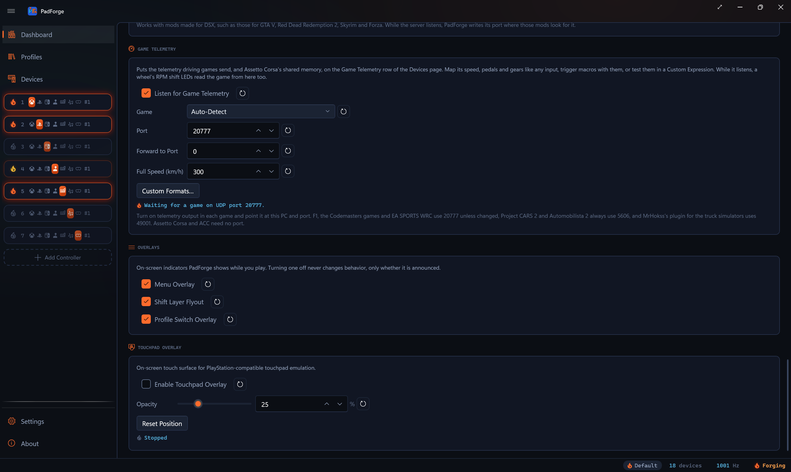
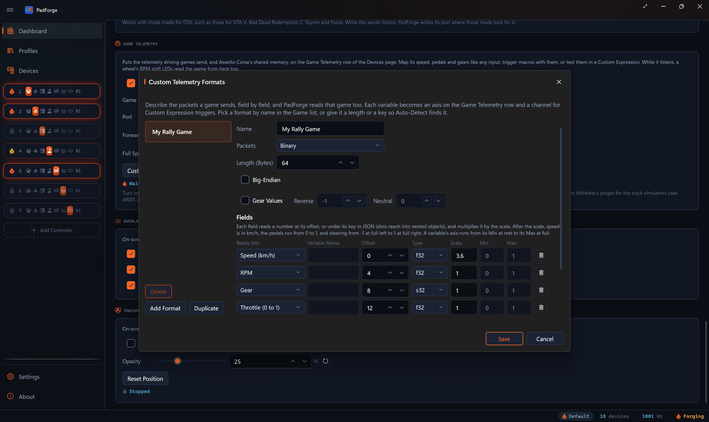

Game Telemetry¶
Driving games send PadForge their speed, RPM, gear, pedals and steering. Map them like a controller's inputs, start macros with them, and use them to play adaptive trigger effects on a DualSense.
Most driving games can send their telemetry to other programs. Forza, F1, the Codemasters rally games, EA SPORTS WRC, BeamNG.drive, Live for Speed, Project CARS 2, Automobilista 2 and the truck simulators send it over the network, and Assetto Corsa and Assetto Corsa Competizione publish it in shared memory. Turn on Listen for Game Telemetry and PadForge reads it. The values appear on a Game Telemetry row on the Devices page. From there you can map them like any input, trigger macros with them, or compare them in a Custom Expression. While PadForge listens, a wheel's RPM shift LEDs read the game from here too.
Turning it on¶
- On the Dashboard, find the Game Telemetry section and tick Listen for Game Telemetry. It is off by default.
- Pick your game under Game, or leave it on Auto-Detect, which tells the game from its packets.
- Set Port to the port the game sends to. It starts at 20777, the port F1, the Codemasters games and EA SPORTS WRC use unless changed. Picking Project CARS 2 and Automobilista 2 sets it to 5606, and picking Euro Truck Simulator 2 and American Truck Simulator sets it to 49001, since those games always send there. Picking another game afterward puts 20777 back, unless you changed the port in the meantime. With Assetto Corsa and Assetto Corsa Competizione picked, Port and Forward to Port are grayed out, since PadForge reads those games from shared memory.
- Turn on the game's telemetry output and point it at this PC and that port (see Setting up each game).
- Start the input engine with the play button.
PadForge listens on every network address, so a game on another PC or on an Xbox can send to this PC's address. The first time it listens, PadForge adds a Windows Firewall rule named PadForge Game Telemetry for the port.

The status line¶
| Line | What it means |
|---|---|
| Waiting for a game on UDP port 20777. | Listening. No game has sent anything PadForge reads in the last second. |
| Listening on UDP port 20777. F1 25 from 127.0.0.1. | A game is sending. The line names the game and the address it sends from. |
| UDP port 20777 is in use by another program. | Another program, SimHub for one, holds the port. Close it, or give PadForge the port and forward to the other program (below). PadForge tries the port again every 2 seconds, or every 5 while the input engine idles, and listens as soon as the other program lets it go. |
| Reading Assetto Corsa Competizione from shared memory. | Assetto Corsa or Assetto Corsa Competizione is running. |
| Waiting for Assetto Corsa or Assetto Corsa Competizione. | Assetto Corsa and Assetto Corsa Competizione is picked and neither game is running. |
| Stopped | The switch is off or the engine is stopped. |
With a forward port set, the line ends with Forwarding to port 20778.
Forward to Port¶
Only one program can listen on a port. When another tool, such as SimHub or a dashboard app, also needs the game's packets, give PadForge the game's port and set Forward to Port to a port the other tool listens on. PadForge copies every packet that arrives, read or not, to that port on this PC (127.0.0.1). 0 forwards nothing, and so does a forward port equal to the listening port.
Full Speed¶
Full Speed (km/h) is the speed that moves the row's Speed axis all the way. It starts at 300 km/h. A speed past it holds the axis at full. Custom Expression variables read the speed in km/h or mph whatever this is set to.
Profiles¶
The switch, the game, the port, the forward port and Full Speed are saved in each profile and change with it. The custom formats are one list for every profile.
Setting up each game¶
| Game | Where to turn telemetry on | Port |
|---|---|---|
| Forza Motorsport 7, Forza Motorsport (2023), Forza Horizon 4, 5 and 6 | In the HUD and Gameplay settings (Forza Horizon) or the HUD options (Forza Motorsport): Data Out on, Data Out IP Address 127.0.0.1, Data Out IP Port the port you set in PadForge. In Forza Motorsport, set Data Out Packet Format to Car Dash. | Your choice |
| F1 22, F1 23, F1 24, F1 25 | In the game's telemetry settings, turn UDP telemetry on. PadForge reads UDP formats 2022 to 2025, the game's own year or an older one. | 20777 |
| DiRT Rally 2.0 and the other Codemasters games | In Documents\My Games\DiRT Rally 2.0\hardwaresettings\hardware_settings_config.xml, set the udp line to <udp enabled="true" extradata="3" ip="127.0.0.1" port="20777" delay="1" />. PadForge reads the extradata="3" layout. |
20777 |
| EA SPORTS WRC | Run the game once so it writes Documents\My Games\WRC\telemetry\config.json. Under udp, packets, enable the entry with "structure": "wrc" and "packet": "session_update", with ip 127.0.0.1 and port 20777, then restart the game. |
20777 |
| BeamNG.drive | Turn on OutGauge support in the game's options (Options, Other, Utilities) and set its IP and port. | Your choice |
| Live for Speed | In cfg.txt, set OutGauge Mode 1, OutGauge IP 127.0.0.1 and OutGauge Port to your port. Live for Speed sends only in the cockpit view. |
Your choice |
| Project CARS 2, Automobilista 2 | In Options, System: UDP Frequency 1 (Off sends nothing) and UDP Protocol Version Project CARS 2. The game sends to every PC on the network. | 5606, fixed |
| Assetto Corsa, Assetto Corsa Competizione | Nothing to set. Both games publish their telemetry in shared memory while you drive. | None |
| Euro Truck Simulator 2, American Truck Simulator | Copy MrHokss's ets2-telemetry-udp plugin DLL into the game's bin\win_x64\plugins folder and accept the prompt when the game starts. |
49001, fixed |
The Microsoft Store and Xbox app editions of Forza Horizon 4 and Forza Motorsport 7 cannot send to 127.0.0.1 until Windows exempts them from network isolation, with the CheckNetIsolation LoopbackExempt command or Fiddler's EnableLoopback utility. The Steam editions and Forza Motorsport (2023) need nothing. Forza-Telemetry-Splitter's notes call ports 5200 to 5300 Forza's reserved range, so pick a port outside it.
The Game Telemetry row¶
While the switch is on, the Devices page lists a Game Telemetry row. It stays there with no game running, so you can map it before you start one. Its panel shows the same status line as the Dashboard.
| Axis | At rest | Full |
|---|---|---|
| Speed | Stopped | Full Speed |
| RPM | 0 | The game's max RPM |
| Throttle, Brake, Clutch, Handbrake | Released | Fully pressed |
| Steering | Centered | Full left or right |
A custom variable adds an axis after Steering, running from the variable's Min to its Max. The row holds up to 17 of them. A variable keeps its axis as long as a format uses its name, and a variable renamed in Custom Formats… keeps it too, so deleting one variable leaves the mappings on the others as they were. A new variable takes the lowest free axis.
| Button | Pressed while |
|---|---|
| Driving | The game says you are driving. A game with no such flag counts as driving while it sends. |
| Reverse | The gear is reverse. |
| Neutral | The gear is neutral. |
| Gear 1 to Gear 18 | That gear is engaged. |
Forza (its IsRaceOn flag), Project CARS 2 (its game state) and Assetto Corsa (its status) say whether you are driving, and so does a custom format with a Driving field.
A second with no packets returns every axis and button to rest. The truck simulator plugin sends only when a value changes, so a parked truck can stay quiet for a long time. Its values hold for ten seconds.
Map the row on a virtual controller's Mappings tab like any device: the throttle onto a trigger, the gear buttons onto shift buttons, Driving onto a mode switch. PadForge never maps it by itself. The row's axes and buttons can also trigger macros, so a macro can fire on Gear 6 or past a point on the Brake axis.
Games PadForge reads¶
| Game | Speed | RPM, max RPM | Gear | Pedals | Steering |
|---|---|---|---|---|---|
| Forza (Car Dash packets) | Yes | Yes | Yes | Throttle, brake, clutch, handbrake | Yes |
| Forza (Sled packets) | Yes | Yes | No | No | No |
| F1 22 to F1 25 | Yes | Yes | Yes | Throttle, brake, clutch | Yes |
| DiRT Rally 2.0 and Codemasters | Yes | Yes | Yes | Throttle, brake, clutch | Yes |
| EA SPORTS WRC | Yes | Yes | Yes | Throttle, brake, clutch, handbrake | Yes |
| BeamNG.drive, Live for Speed | Yes | RPM only | Yes | Throttle, brake, clutch, handbrake | No |
| Project CARS 2, Automobilista 2 | Yes | Yes | Yes | Throttle, brake, clutch, handbrake | Yes |
| Assetto Corsa, ACC | Yes | Yes | Yes | Throttle, brake, clutch | Yes |
| Euro Truck Simulator 2, ATS | Yes | RPM only | Yes, up to 18 | Throttle, brake, clutch | Yes |
A game that sends no max RPM gets the highest RPM seen since it started sending, so the RPM axis reads as a share of that.
Auto-Detect keeps the game it found. Another game takes over after three of its packets in a row, or after a second of silence, so one stray packet cannot switch the row.
Telemetry in Custom Expression triggers¶
A Custom Expression trigger compares variables with a formula. Set a variable's Source to Game Telemetry and pick what it reads:
| Channel | Unit |
|---|---|
| Speed (km/h), Speed (mph) | The speed in that unit |
| RPM, Max RPM | Revolutions per minute |
| RPM (% of Max) | 0 to 100 |
| Gear (-1 Reverse, 0 Neutral) | -1 reverse, 0 neutral, 1 and up |
| Throttle (%), Brake (%), Clutch (%), Handbrake (%) | 0 to 100 |
| Steering (-100 Left to 100 Right) | -100 to 100 |
| Driving (1 or 0) | 1 while driving |
| A custom variable, by name | Its own unit, after its scale |
The values are in those units. With a on Speed (km/h) and b on Gear, a > 120 && b == 3 fires above 120 km/h in third gear. Compare a telemetry variable with a number: the formula fires at 0.5, and a bare speed variable passes that as soon as the car moves. A telemetry variable needs no Game Telemetry row on the slot. Every value reads 0 while no game sends.
Custom formats¶
Custom Formats… opens a window where you describe a game PadForge does not know, field by field. Each format has:
- A Name. It cannot hold
:or|. - Packets: Binary or JSON.
- For binary, a Length (Bytes): only packets of exactly that size are read with the format. For JSON, a Required Key every packet carries.
- Big-Endian, for a packet that writes each number with its most significant byte first. Games on a PC almost always write the least significant byte first.
- Gear Values, for a gear field with its own numbers for reverse and neutral, as Forza's 0 and 11 are. Without them, a negative gear is reverse and 0 is neutral.

Each field reads a number and multiplies it by its Scale:
| Column | What it holds |
|---|---|
| Reads Into | What the field feeds: Speed (km/h), RPM, Max RPM, Gear, Throttle, Brake, Clutch, Handbrake (each 0 to 1), Steering (-1 to 1), Driving (not 0), or a Variable. |
| Variable Name | The variable's name, for a field that reads into a variable. |
| Offset, Type | For binary: the byte the number starts at, and its type (u8, s8, u16, s16, u32, s32, f32, f64). |
| JSON Key | For JSON: the key, with dots for nested objects (car.engine.rpm). |
| Scale | The value is multiplied by this. |
| Min, Max | A variable's axis runs from Min at rest to Max at full. |
A format with a length or a key is found by Auto-Detect, ahead of the built-in games. Pick a format by name in the Game list (it shows as Name (Custom)) to read every packet with it. A format with neither a length nor a key is read only when picked. Each variable becomes an axis on the row and a channel for Custom Expression triggers.
Save checks every format and names the first problem: a name with : or |, two formats with one name, a variable with no name, a JSON field with no key, or a field that reads past the end of its packet. When a settings file edited by hand holds two formats with one name, ignoring case, PadForge keeps the first.
Adaptive Trigger Effect¶
Two macro actions in the Rumble group play adaptive trigger effects on the DualSense and DualSense Edge controllers on the macro's slot, the effects game mods for DSX use (see Game Mods).
Adaptive Trigger Effect plays one effect:
- Trigger: Right (R2), Left (L2) or Both (L2 and R2).
- Effect: Off, Feedback, Weapon, Vibration, Bow, Galloping, Machine, Slope Feedback, Multiple-Position Feedback, Multiple-Position Vibration, or one of the named presets: GameCube, Very Soft, Soft, Medium, Hard, Very Hard, Hardest, Rigid, Choppy and Vibrating Pulse. DSX's Vibrate Trigger is Vibration with the Start Zone at 0, the Strength at 8 and the Frequency the mod gives, 10 when it gives none, the same bytes a mod sends for it.
- The chosen effect's settings, each with its range: zones from 0 at rest to 9 at full pull, strengths, frequencies in Hz.
- Holds: While the Macro's Trigger Is Held, For a Set Time (with a Time from 1 to 60,000 milliseconds), or Until Stopped.
Stop Adaptive Trigger Effect ends what a macro holds on the chosen trigger, for an effect that holds until stopped.
An end zone has to be past its start zone, and Galloping's second foot past its first. Values that break that rule play nothing, and the action says so.
A game's own trigger effect comes first, then a game mod's, then a macro's. When the macro's effect ends, the trigger returns to its setting on the Adaptive Triggers tab. An Xbox controller with Translate Adaptive Trigger Vibrations on, on the Impulse Triggers tab, plays a macro's vibrating effects on its trigger motors.
Bow, Galloping and Machine are not official DualSense effects, and a firmware update could remove them.
Examples¶
- Brake resistance. A Custom Expression macro with
aon Brake (%) and the formulaa > 30plays Feedback on L2, held while the macro's trigger is held. Lift off the brake and the trigger goes slack. - Shift buzz. With
aon RPM (% of Max),a > 95plays Vibration on R2 for a set time. - Gear colors. One macro per gear, each with
aon Gear and a formula such asa == 3, runs Set Lightbar Color in Sticky (Hold) mode, so the lightbar shows the gear.
Limits¶
- No game has sent to this release on a test PC. The layouts come from the projects credited on the About page, and the tests replay packets built from them.
- Which way Assetto Corsa's steering counts as negative is not settled by its documentation.
- Forza Horizon 6's packet size comes from Forza's documentation as summarized by a search, and PadForge reads both 323 and 324 bytes.
- How each adaptive trigger effect feels on a DualSense has not been checked against DSX.
See the technical page, Game Telemetry Internals.
Last updated for PadForge 5.2.0.